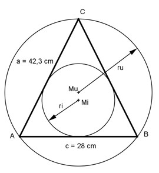

Aufgabe 33 Wie groß sind der Inkreisradius ri und der Umkreisradius ru des gleichschenkligen Dreiecks?

Mi ist der Mittelpunkt des Inkreises, der auf dem Schnittpunkt der Winkelhalbierenden liegt. Mu ist der Mittelpunkt des Umkreises, der auf dem Schnittpunkt der Mittelsenkrechten liegt. c/2 14 cm cos α = ------ = ---------- = 0,331 --> α = 70,7° a 42,3 cm Im Dreieck ADMi gilt: ri tan α/2 = ----- | * c/2 c/2 tan α/2 * c/2 = ri ri = 0,7094 * 14 cm = 9,9 cm γ = 180° - 2 * α = 180° - 2 * 70,7° = 38,6° Im Dreieck MuEC gilt: a/2 cos γ/2 = ------- | * ru ru cos γ/2 * ru = a/2 | :cos γ/2 a 42,3 cm ru = -------------- = ------------- = 22,4 cm 2 * cos γ/2 2 * 0,9438